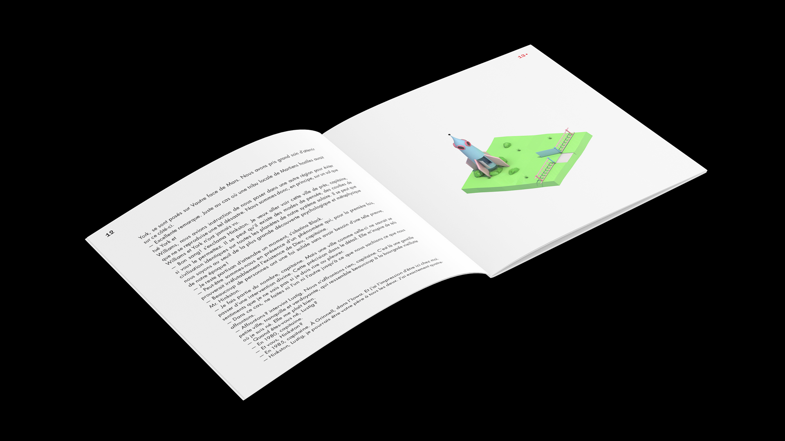
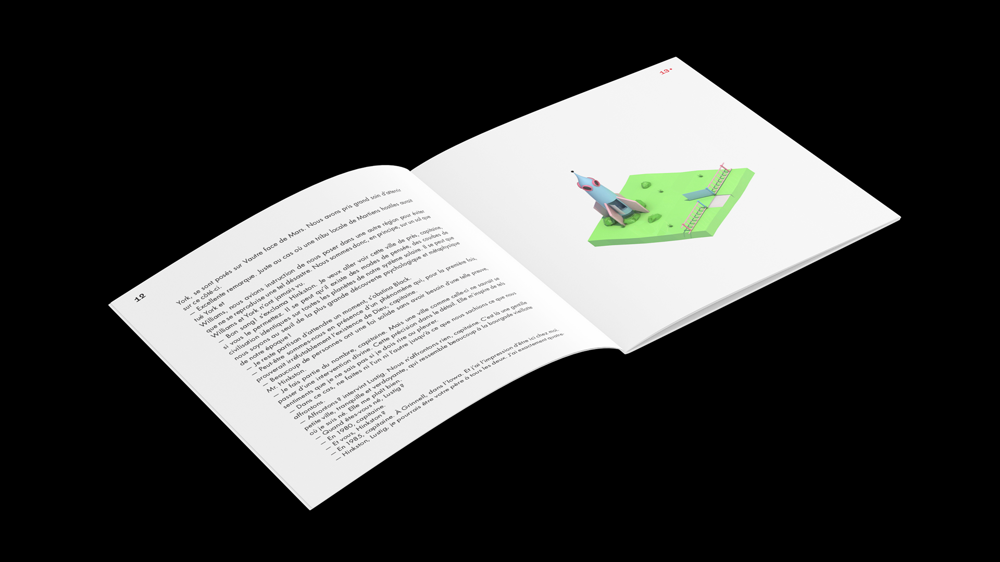

Morgan Gomez
Martian Chronicles
Editorial, 3DCG, AR
For this project, I did a work of republication of The Martian Chronicles, by Ray Bradbury. The goal here was to design a book that could exist both in print and in digital versions. So for this book, I chose to do an AR version of the book.
I wanted to represent the fact that, in the short story that I had to republicate, a group of human land on Mars, but everything there is too perfect, too similar to Earth, and that something is wrong. So I made smooth-pastel-perfect 3D sceneries of the city they're landing in, with small bizarre details in them.
 
